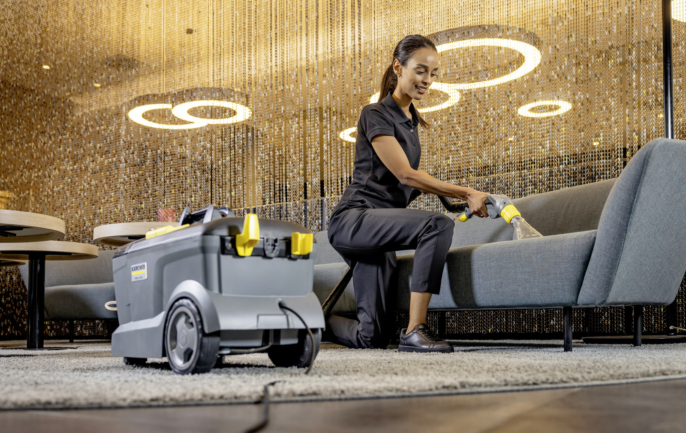
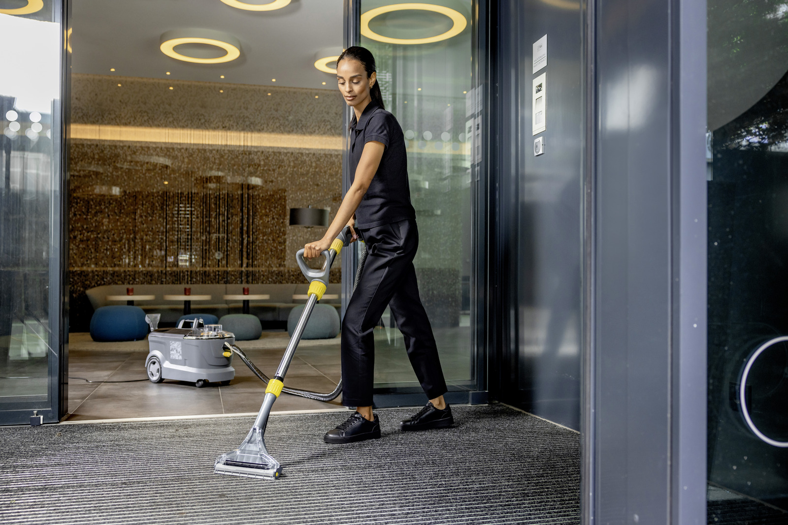

Przywróć blask swoim dywanom, kanapom i tapicerce samochodowej. Oszczędź setki złotych i zrób to sam!
Jedno urządzenie, dziesiątki zastosowań w Twoim domu i aucie
Skutecznie usuń plamy, sierść, roztocza i nieprzyjemne zapachy z kanap, narożników, foteli i krzeseł.
Odśwież fotele, boczki drzwi, podłogę oraz bagażnik swojego samochodu małą ssawką do tapicerki.
Głębokie pranie ekstrakcyjne wyciąga brud zalegający u podstawy włókien, przywracając dawny kolor.
Zobacz, jak łatwo przywrócisz czystość w swoim domu lub firmie

Skuteczne usuwanie głębokich zabrudzeń i plam.

Głębokie odświeżenie włókien i przywrócenie dawnego koloru.
Obejrzyj profesjonalne wideoporadniki i przekonaj się, jakie to proste
Zobacz, jak prawidłowo przygotować, rozrobić chemię, odessać brud i wyczyścić narożnik od A do Z.
Oglądaj na YouTubeKompleksowy poradnik eksperta o obsłudze ekstraktora Kärcher Puzzi 10/1 oraz technikach usuwania plam.
Oglądaj na YouTubePoznaj sprawdzone triki profesjonalistów, odpowiednie dawkowanie chemii oraz metody na idealnie suche i czyste tkaniny.
Oglądaj na YouTubeŻadnych ukrytych kosztów. W zestawie zawsze dostajesz markową chemię!
Kaucja zwrotna przy odbiorze urządzenia wynosi 200 zł (płatna gotówką lub Blikiem).
Tylko 4 proste kroki dzielą Cię od idealnej czystości
Zadzwoń, napisz SMS lub odezwij się na Messengerze, aby wybrać dogodny termin.
Odbierz gotowy do pracy odkurzacz w Lubiszewie (0 zł) lub zamów dowóz pod wskazany adres.
Pierzesz kiedy chcesz. Urządzenie jest niezwykle proste i intuicyjne w obsłudze.
Oddajesz sprzęt po zakończonej pracy – bez zbędnych formalności.
Wszystko, co musisz wiedzieć przed wynajmem sprzętu
Odbiór osobisty w Lubiszewie jest całkowicie darmowy (0 zł). Oferujemy również dowóz pod drzwi lub w umówione miejsce na terenie Tczewa za 10 zł. Okoliczne miejscowości ustalamy indywidualnie telefonicznie!
Tak, używamy oryginalnego, profesjonalnego proszku Kärcher RM 760, który jest w pełni bezpieczny dla domowników, dzieci oraz zwierząt domowych po wyschnięciu.
Czas schnięcia zależy od wentylacji w pomieszczeniu oraz temperatury, zazwyczaj wynosi od 4 do 8 godzin. Dzięki silnemu odsysaniu wody przez Puzzi, materiał nie jest przemoczony.
Przy odbiorze urządzenia pobierana jest zwrotna kaucja w wysokości 200 zł (płatna gotówką lub Blikiem), którą oddajemy w całości przy zwrocie czystego i sprawnego sprzętu.
Masz pytania? Chcesz sprawdzić dostępność odkurzacza na konkretny dzień? Wybierz najwygodniejszą formę kontaktu i skontaktuj się z nami od razu.
Zadzwoń lub napisz bezpośrednio, aby potwierdzić wolny termin w kilka chwil: